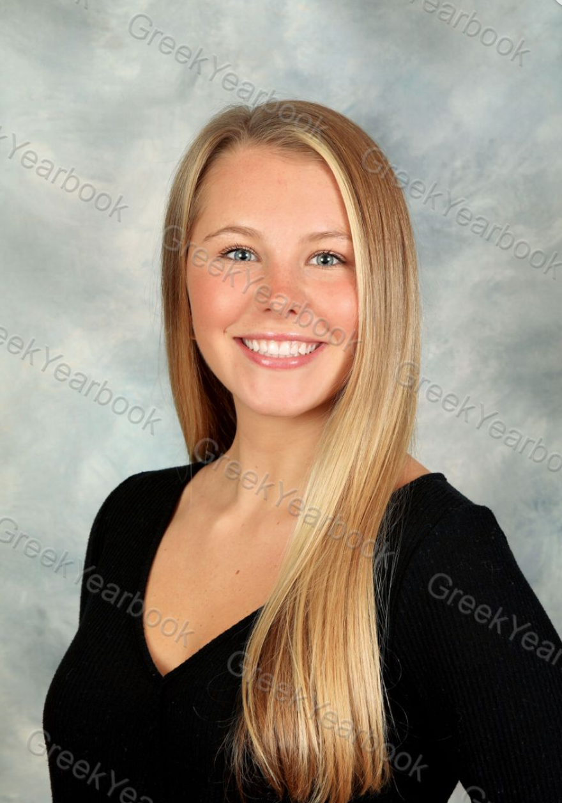

Devin Rank
Student

Staff Writer
Stories Beneath the Shell
January 2021 - Present
- Reports and writes on multiple campus-wide stories
- Speaks to sources and captures images making publishable stories
Server
Toast City Diner
May 2021 -Present
- Collaborates with the kitchen and other servers to accommodate customers
- Memorizes over 30 menu items and specials
- Upholds a clean and organized work environment
Transcriber
Private Audio Transcriber
May 2020
- Transcribed recordings for The Show Must Go On, a documentary featuring Broadway costume designers making PPE for NYC hospitals
- Indie Shorts Fest and New York Shorts Fest official selection
Assistant Swim Coach
Rock Spring Country Club
June 2018 - August 2018
- Lead swimmers ages 5-18 to success in individual and group events
- Taught new drills and techniques
- Encouraged and motivated blossoming athletes
- The University of Maryland, College Park, May 2023, Philip Merrill College of Journalism, GPA: 3.6
Vice President of Operations
Delta Delta Delta Sorority
November 2020 - Present
- Directs, designs, and facilitates weekly chapter meetings with over 100 women
- Consults and collaborates with Nationals to fix problems and implement new chapter policies
- Oversees the finance committee and handles chapter-wide issues
- Individually assists members with financial struggles
Member
Community Service Committee
January 2021 - Present
- Aids in organizing fundraisers through collaborative meetings
- Attends community service events in the surrounding areas
Member
Girls Club of Glen Ridge
September 2015 - June 2019
- Earned 150 community service hours
- Fundraised for cancer foundations and volunteered at local food pantries
- MS Word
- MS Excel
- MS Powerpoint
- Adobe Photoship
- Adobe After Affects